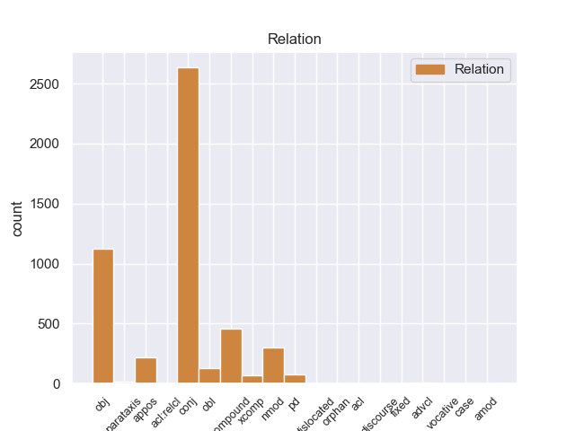
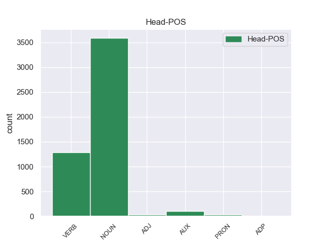

Distribution of features within this leaf



Agreement Rules sorted by frequency.
- When the dependent token is the conjunct(conj) of the head token, and the dependent token is NOUN.
1 Su _ _ _ _ 0 _ _ _
2 le _ _ _ _ 0 _ _ _
3 barche _ _ _ _ 0 _ _ _
4 i _ _ _ _ 0 _ _ _
5 turisti _ _ _ _ 0 _ _ _
6 possono _ _ _ _ 0 _ _ _
7 ascoltare _ _ _ _ 0 _ _ _
8 la _ _ _ _ 0 _ _ _
9 descrizione descrizione NOUN -- Gender=Fem|Number=Sing 0 _ _ _
10 e _ _ _ _ 0 _ _ _
11 la _ _ _ _ 0 _ _ _
12 storia storia NOUN -- Gender=Fem|Number=Sing 9 conj _ _
13 di _ _ _ _ 0 _ _ _
14 i _ _ _ _ 0 _ _ _
15 monumenti _ _ _ _ 0 _ _ _
16 che _ _ _ _ 0 _ _ _
17 si _ _ _ _ 0 _ _ _
18 vedono _ _ _ _ 0 _ _ _
19 da _ _ _ _ 0 _ _ _
20 il _ _ _ _ 0 _ _ _
21 fiume _ _ _ _ 0 _ _ _
22 . _ _ _ _ 0 _ _ _
1 Infatti _ _ _ _ 0 _ _ _
2 alcuni _ _ _ _ 0 _ _ _
3 esperti _ _ _ _ 0 _ _ _
4 hanno _ _ _ _ 0 _ _ _
5 organizzato organizzare VERB -- Gender=Masc|Number=Sing|Tense=Past|VerbForm=Part 0 _ _ _
6 un _ _ _ _ 0 _ _ _
7 servizio servizio NOUN -- Gender=Masc|Number=Sing 5 obj _ _
8 di _ _ _ _ 0 _ _ _
9 trasporto _ _ _ _ 0 _ _ _
10 pubblico _ _ _ _ 0 _ _ _
11 con _ _ _ _ 0 _ _ _
12 le _ _ _ _ 0 _ _ _
13 barche _ _ _ _ 0 _ _ _
14 . _ _ _ _ 0 _ _ _
1 I _ _ _ _ 0 _ _ _
2 ricercatori _ _ _ _ 0 _ _ _
3 di _ _ _ _ 0 _ _ _
4 il _ _ _ _ 0 _ _ _
5 Censis _ _ _ _ 0 _ _ _
6 , _ _ _ _ 0 _ _ _
7 Centro _ _ _ _ 0 _ _ _
8 Studi studio NOUN -- Gender=Masc|Number=Plur 0 _ _ _
9 Investimenti investimento NOUN -- Gender=Masc|Number=Plur 8 compound _ _
10 Sociali _ _ _ _ 0 _ _ _
11 , _ _ _ _ 0 _ _ _
12 hanno _ _ _ _ 0 _ _ _
13 presentato _ _ _ _ 0 _ _ _
14 un _ _ _ _ 0 _ _ _
15 rapporto _ _ _ _ 0 _ _ _
16 su _ _ _ _ 0 _ _ _
17 le _ _ _ _ 0 _ _ _
18 condizioni _ _ _ _ 0 _ _ _
19 di _ _ _ _ 0 _ _ _
20 vita _ _ _ _ 0 _ _ _
21 di _ _ _ _ 0 _ _ _
22 la _ _ _ _ 0 _ _ _
23 popolazione _ _ _ _ 0 _ _ _
24 italiana _ _ _ _ 0 _ _ _
25 in _ _ _ _ 0 _ _ _
26 il _ _ _ _ 0 _ _ _
27 2003 _ _ _ _ 0 _ _ _
28 . _ _ _ _ 0 _ _ _
1 Il _ _ _ _ 0 _ _ _
2 riso riso NOUN -- Gender=Masc|Number=Sing 0 _ _ _
3 brillato _ _ _ _ 0 _ _ _
4 , _ _ _ _ 0 _ _ _
5 cioè _ _ _ _ 0 _ _ _
6 il _ _ _ _ 0 _ _ _
7 riso riso NOUN -- Gender=Masc|Number=Sing 2 nmod _ _
8 senza _ _ _ _ 0 _ _ _
9 la _ _ _ _ 0 _ _ _
10 buccia _ _ _ _ 0 _ _ _
11 , _ _ _ _ 0 _ _ _
12 è _ _ _ _ 0 _ _ _
13 molto _ _ _ _ 0 _ _ _
14 digeribile _ _ _ _ 0 _ _ _
15 . _ _ _ _ 0 _ _ _
1 Per _ _ _ _ 0 _ _ _
2 esempio _ _ _ _ 0 _ _ _
3 Mina _ _ _ _ 0 _ _ _
4 ha _ _ _ _ 0 _ _ _
5 reso _ _ _ _ 0 _ _ _
6 famosa _ _ _ _ 0 _ _ _
7 la _ _ _ _ 0 _ _ _
8 canzone canzone NOUN -- Gender=Fem|Number=Sing 0 _ _ _
9 di _ _ _ _ 0 _ _ _
10 Fabrizio _ _ _ _ 0 _ _ _
11 De _ _ _ _ 0 _ _ _
12 Andrè _ _ _ _ 0 _ _ _
13 La _ _ _ _ 0 _ _ _
14 canzone canzone NOUN -- Gender=Fem|Number=Sing 8 appos _ _
15 di _ _ _ _ 0 _ _ _
16 Marinella _ _ _ _ 0 _ _ _
17 . _ _ _ _ 0 _ _ _
1 I _ _ _ _ 0 _ _ _
2 ciclisti _ _ _ _ 0 _ _ _
3 sono _ _ _ _ 0 _ _ _
4 partiti _ _ _ _ 0 _ _ _
5 il _ _ _ _ 0 _ _ _
6 primo _ _ _ _ 0 _ _ _
7 maggio _ _ _ _ 0 _ _ _
8 da _ _ _ _ 0 _ _ _
9 Lecce _ _ _ _ 0 _ _ _
10 , _ _ _ _ 0 _ _ _
11 in _ _ _ _ 0 _ _ _
12 Puglia _ _ _ _ 0 _ _ _
13 , _ _ _ _ 0 _ _ _
14 e _ _ _ _ 0 _ _ _
15 sono _ _ _ _ 0 _ _ _
16 arrivati arrivare VERB -- Gender=Masc|Number=Plur|Tense=Past|VerbForm=Part 0 _ _ _
17 il _ _ _ _ 0 _ _ _
18 primo _ _ _ _ 0 _ _ _
19 giugno giugno NOUN -- Gender=Masc|Number=Sing 16 obl _ _
20 a _ _ _ _ 0 _ _ _
21 Milano _ _ _ _ 0 _ _ _
22 , _ _ _ _ 0 _ _ _
23 in _ _ _ _ 0 _ _ _
24 Lombardia _ _ _ _ 0 _ _ _
25 . _ _ _ _ 0 _ _ _
1 È _ _ _ _ 0 _ _ _
2 stato essere AUX -- Gender=Masc|Number=Sing|Tense=Past|VerbForm=Part 0 _ _ _
3 segretario segretario NOUN -- Gender=Masc|Number=Sing 2 PD _ _
4 di _ _ _ _ 0 _ _ _
5 il _ _ _ _ 0 _ _ _
6 partito _ _ _ _ 0 _ _ _
7 di _ _ _ _ 0 _ _ _
8 la _ _ _ _ 0 _ _ _
9 Rifondazione _ _ _ _ 0 _ _ _
10 Comunista _ _ _ _ 0 _ _ _
11 e _ _ _ _ 0 _ _ _
12 deputato _ _ _ _ 0 _ _ _
13 di _ _ _ _ 0 _ _ _
14 il _ _ _ _ 0 _ _ _
15 Parlamento _ _ _ _ 0 _ _ _
16 italiano _ _ _ _ 0 _ _ _
17 ed _ _ _ _ 0 _ _ _
18 europeo _ _ _ _ 0 _ _ _
19 . _ _ _ _ 0 _ _ _
1 Il _ _ _ _ 0 _ _ _
2 23 _ _ _ _ 0 _ _ _
3 settembre _ _ _ _ 0 _ _ _
4 2005 _ _ _ _ 0 _ _ _
5 , _ _ _ _ 0 _ _ _
6 il _ _ _ _ 0 _ _ _
7 Presidente _ _ _ _ 0 _ _ _
8 di _ _ _ _ 0 _ _ _
9 la _ _ _ _ 0 _ _ _
10 Repubblica _ _ _ _ 0 _ _ _
11 , _ _ _ _ 0 _ _ _
12 Carlo _ _ _ _ 0 _ _ _
13 Azeglio _ _ _ _ 0 _ _ _
14 Ciampi _ _ _ _ 0 _ _ _
15 , _ _ _ _ 0 _ _ _
16 ha _ _ _ _ 0 _ _ _
17 nominato nominare VERB -- Gender=Masc|Number=Sing|Tense=Past|VerbForm=Part 0 _ _ _
18 Giorgio _ _ _ _ 0 _ _ _
19 Napolitano _ _ _ _ 0 _ _ _
20 senatore senatore NOUN -- Gender=Masc|Number=Sing 17 xcomp _ _
21 a _ _ _ _ 0 _ _ _
22 vita _ _ _ _ 0 _ _ _
23 . _ _ _ _ 0 _ _ _
1 Ha _ _ _ _ 0 _ _ _
2 scritto _ _ _ _ 0 _ _ _
3 molti _ _ _ _ 0 _ _ _
4 libri libro NOUN -- Gender=Masc|Number=Plur 0 _ _ _
5 per _ _ _ _ 0 _ _ _
6 ragazzi _ _ _ _ 0 _ _ _
7 : _ _ _ _ 0 _ _ _
8 i _ _ _ _ 0 _ _ _
9 Racconti Racconti NOUN -- Gender=Masc|Number=Plur 4 parataxis _ _
10 di _ _ _ _ 0 _ _ _
11 le _ _ _ _ 0 _ _ _
12 fate _ _ _ _ 0 _ _ _
13 di _ _ _ _ 0 _ _ _
14 il _ _ _ _ 0 _ _ _
15 1875 _ _ _ _ 0 _ _ _
16 , _ _ _ _ 0 _ _ _
17 Il _ _ _ _ 0 _ _ _
18 viaggio _ _ _ _ 0 _ _ _
19 per _ _ _ _ 0 _ _ _
20 l' _ _ _ _ 0 _ _ _
21 Italia _ _ _ _ 0 _ _ _
22 di _ _ _ _ 0 _ _ _
23 Giannettino _ _ _ _ 0 _ _ _
24 di _ _ _ _ 0 _ _ _
25 il _ _ _ _ 0 _ _ _
26 1876 _ _ _ _ 0 _ _ _
27 e _ _ _ _ 0 _ _ _
28 Minuzzolo _ _ _ _ 0 _ _ _
29 di _ _ _ _ 0 _ _ _
30 il _ _ _ _ 0 _ _ _
31 1878 _ _ _ _ 0 _ _ _
32 . _ _ _ _ 0 _ _ _
1 Spetta _ _ _ _ 0 _ _ _
2 ora _ _ _ _ 0 _ _ _
3 a _ _ _ _ 0 _ _ _
4 le _ _ _ _ 0 _ _ _
5 agenzie _ _ _ _ 0 _ _ _
6 governative _ _ _ _ 0 _ _ _
7 facilitar _ _ _ _ 0 _ _ _
8 ne _ _ _ _ 0 _ _ _
9 lo lo PRON -- Clitic=Yes|Gender=Masc|Number=Sing|Person=3|PronType=Prs 0 _ _ _
10 sviluppo sviluppo NOUN -- Gender=Masc|Number=Sing 9 advcl _ _
11 . _ _ _ _ 0 _ _ _
1 I _ _ _ _ 0 _ _ _
2 suoi _ _ _ _ 0 _ _ _
3 personaggi _ _ _ _ 0 _ _ _
4 diventano _ _ _ _ 0 _ _ _
5 più _ _ _ _ 0 _ _ _
6 complessi _ _ _ _ 0 _ _ _
7 e _ _ _ _ 0 _ _ _
8 teneri _ _ _ _ 0 _ _ _
9 man mano NOUN -- Gender=Fem|Number=Sing 0 _ _ _
10 mano mano NOUN -- Gender=Fem|Number=Sing 9 fixed _ _
11 che _ _ _ _ 0 _ _ _
12 passa _ _ _ _ 0 _ _ _
13 abilmente _ _ _ _ 0 _ _ _
14 da _ _ _ _ 0 _ _ _
15 le _ _ _ _ 0 _ _ _
16 scene _ _ _ _ 0 _ _ _
17 comiche _ _ _ _ 0 _ _ _
18 a _ _ _ _ 0 _ _ _
19 quelle _ _ _ _ 0 _ _ _
20 serie _ _ _ _ 0 _ _ _
21 , _ _ _ _ 0 _ _ _
22 da _ _ _ _ 0 _ _ _
23 la _ _ _ _ 0 _ _ _
24 prosa _ _ _ _ 0 _ _ _
25 a _ _ _ _ 0 _ _ _
26 la _ _ _ _ 0 _ _ _
27 poesia _ _ _ _ 0 _ _ _
28 , _ _ _ _ 0 _ _ _
29 e _ _ _ _ 0 _ _ _
30 raggiunge _ _ _ _ 0 _ _ _
31 la _ _ _ _ 0 _ _ _
32 varietà _ _ _ _ 0 _ _ _
33 narrativa _ _ _ _ 0 _ _ _
34 di _ _ _ _ 0 _ _ _
35 il _ _ _ _ 0 _ _ _
36 suo _ _ _ _ 0 _ _ _
37 più _ _ _ _ 0 _ _ _
38 maturo _ _ _ _ 0 _ _ _
39 lavoro _ _ _ _ 0 _ _ _
40 . _ _ _ _ 0 _ _ _
1 In _ _ _ _ 0 _ _ _
2 il _ _ _ _ 0 _ _ _
3 2005 _ _ _ _ 0 _ _ _
4 , _ _ _ _ 0 _ _ _
5 La _ _ _ _ 0 _ _ _
6 Linea _ _ _ _ 0 _ _ _
7 Yamanote _ _ _ _ 0 _ _ _
8 trasportava _ _ _ _ 0 _ _ _
9 una _ _ _ _ 0 _ _ _
10 media _ _ _ _ 0 _ _ _
11 di _ _ _ _ 0 _ _ _
12 3,55 _ _ _ _ 0 _ _ _
13 milioni _ _ _ _ 0 _ _ _
14 di _ _ _ _ 0 _ _ _
15 passeggeri _ _ _ _ 0 _ _ _
16 ogni _ _ _ _ 0 _ _ _
17 giorno _ _ _ _ 0 _ _ _
18 , _ _ _ _ 0 _ _ _
19 complessivamente _ _ _ _ 0 _ _ _
20 1,3 _ _ _ _ 0 _ _ _
21 miliardi miliardo NOUN -- Gender=Masc|Number=Plur 0 _ _ _
22 di _ _ _ _ 0 _ _ _
23 passeggeri _ _ _ _ 0 _ _ _
24 l' _ _ _ _ 0 _ _ _
25 anno anno NOUN -- Gender=Masc|Number=Sing 21 orphan _ _
26 . _ _ _ _ 0 _ _ _
1 Signor _ _ _ _ 0 _ _ _
2 presidente _ _ _ _ 0 _ _ _
3 , _ _ _ _ 0 _ _ _
4 onorevoli _ _ _ _ 0 _ _ _
5 colleghi collega NOUN -- Gender=Masc|Number=Plur 8 vocative _ _
6 , _ _ _ _ 0 _ _ _
7 buon _ _ _ _ 0 _ _ _
8 anno anno NOUN -- Gender=Masc|Number=Sing 0 _ _ _
9 e _ _ _ _ 0 _ _ _
10 buon _ _ _ _ 0 _ _ _
11 nuovo _ _ _ _ 0 _ _ _
12 millennio _ _ _ _ 0 _ _ _
13 . _ _ _ _ 0 _ _ _
1 a _ _ _ _ 0 _ _ _
2 il _ _ _ _ 0 _ _ _
3 momento _ _ _ _ 0 _ _ _
4 giusto _ _ _ _ 0 _ _ _
5 , _ _ _ _ 0 _ _ _
6 se _ _ _ _ 0 _ _ _
7 sarà _ _ _ _ 0 _ _ _
8 necessario _ _ _ _ 0 _ _ _
9 , _ _ _ _ 0 _ _ _
10 la _ _ _ _ 0 _ _ _
11 Lega _ _ _ _ 0 _ _ _
12 andrà _ _ _ _ 0 _ _ _
13 a _ _ _ _ 0 _ _ _
14 casa _ _ _ _ 0 _ _ _
15 a _ _ _ _ 0 _ _ _
16 prender _ _ _ _ 0 _ _ _
17 li _ _ _ _ 0 _ _ _
18 , _ _ _ _ 0 _ _ _
19 li _ _ _ _ 0 _ _ _
20 abbiamo _ _ _ _ 0 _ _ _
21 già _ _ _ _ 0 _ _ _
22 cacciati cacciare VERB -- Gender=Masc|Number=Plur|Tense=Past|VerbForm=Part 0 _ _ _
23 i _ _ _ _ 0 _ _ _
24 fascisti fascista NOUN -- Gender=Masc|Number=Plur 22 dislocated _ _
25 da _ _ _ _ 0 _ _ _
26 il _ _ _ _ 0 _ _ _
27 Nord _ _ _ _ 0 _ _ _
28 . _ _ _ _ 0 _ _ _
1 Brava bravo ADJ -- Gender=Fem|Number=Sing 0 _ _ _
2 , _ _ _ _ 0 _ _ _
3 brava _ _ _ _ 0 _ _ _
4 , _ _ _ _ 0 _ _ _
5 complimenti complimenti NOUN -- Gender=Fem|Number=Sing 1 discourse _ _
6 " _ _ _ _ 0 _ _ _
7 . _ _ _ _ 0 _ _ _
1 Fiat _ _ _ _ 0 _ _ _
2 verserà _ _ _ _ 0 _ _ _
3 a _ _ _ _ 0 _ _ _
4 Veba _ _ _ _ 0 _ _ _
5 3,65 _ _ _ _ 0 _ _ _
6 miliardi miliardo NOUN -- Gender=Masc|Number=Plur 0 _ _ _
7 di _ _ _ _ 0 _ _ _
8 dollari _ _ _ _ 0 _ _ _
9 , _ _ _ _ 0 _ _ _
10 di _ _ _ _ 0 _ _ _
11 cui _ _ _ _ 0 _ _ _
12 1,75 _ _ _ _ 0 _ _ _
13 miliardi miliardo NOUN -- Gender=Masc|Number=Plur 6 acl:relcl _ _
14 in _ _ _ _ 0 _ _ _
15 contanti _ _ _ _ 0 _ _ _
16 e _ _ _ _ 0 _ _ _
17 1,9 _ _ _ _ 0 _ _ _
18 miliardi _ _ _ _ 0 _ _ _
19 come _ _ _ _ 0 _ _ _
20 dividendo _ _ _ _ 0 _ _ _
21 straordinario _ _ _ _ 0 _ _ _
22 . _ _ _ _ 0 _ _ _
1 La _ _ _ _ 0 _ _ _
2 storia _ _ _ _ 0 _ _ _
3 di _ _ _ _ 0 _ _ _
4 Balzac _ _ _ _ 0 _ _ _
5 Une _ _ _ _ 0 _ _ _
6 Heure _ _ _ _ 0 _ _ _
7 de _ _ _ _ 0 _ _ _
8 Ma _ _ _ _ 0 _ _ _
9 Vie _ _ _ _ 0 _ _ _
10 ( _ _ _ _ 0 _ _ _
11 Un' _ _ _ _ 0 _ _ _
12 ora _ _ _ _ 0 _ _ _
13 di _ _ _ _ 0 _ _ _
14 la _ _ _ _ 0 _ _ _
15 mia _ _ _ _ 0 _ _ _
16 vita _ _ _ _ 0 _ _ _
17 , _ _ _ _ 0 _ _ _
18 1822 _ _ _ _ 0 _ _ _
19 ) _ _ _ _ 0 _ _ _
20 , _ _ _ _ 0 _ _ _
21 in _ _ _ _ 0 _ _ _
22 cui _ _ _ _ 0 _ _ _
23 i _ _ _ _ 0 _ _ _
24 dettagli _ _ _ _ 0 _ _ _
25 minuziosi _ _ _ _ 0 _ _ _
26 sono _ _ _ _ 0 _ _ _
27 seguiti _ _ _ _ 0 _ _ _
28 da _ _ _ _ 0 _ _ _
29 profonde _ _ _ _ 0 _ _ _
30 riflessioni _ _ _ _ 0 _ _ _
31 personali _ _ _ _ 0 _ _ _
32 è _ _ _ _ 0 _ _ _
33 un _ _ _ _ 0 _ _ _
34 chiaro _ _ _ _ 0 _ _ _
35 antecedente _ _ _ _ 0 _ _ _
36 di _ _ _ _ 0 _ _ _
37 lo _ _ _ _ 0 _ _ _
38 stile _ _ _ _ 0 _ _ _
39 che _ _ _ _ 0 _ _ _
40 Proust _ _ _ _ 0 _ _ _
41 ha _ _ _ _ 0 _ _ _
42 usato _ _ _ _ 0 _ _ _
43 in _ _ _ _ 0 _ _ _
44 À _ _ _ _ 0 _ _ _
45 la _ _ _ _ 0 _ _ _
46 recherche _ _ _ _ 0 _ _ _
47 du du ADP -- Gender=Masc|Number=Sing 0 _ _ _
48 temps temps NOUN -- Gender=Masc|Number=Sing 47 CASE _ _
49 perdu _ _ _ _ 0 _ _ _
50 . _ _ _ _ 0 _ _ _
1 Ma _ _ _ _ 0 _ _ _
2 quanto _ _ _ _ 0 _ _ _
3 ci _ _ _ _ 0 _ _ _
4 metteranno _ _ _ _ 0 _ _ _
5 i _ _ _ _ 0 _ _ _
6 governi _ _ _ _ 0 _ _ _
7 ad _ _ _ _ 0 _ _ _
8 agire _ _ _ _ 0 _ _ _
9 resta resta NOUN -- Gender=Fem|Number=Sing 0 _ _ _
10 una _ _ _ _ 0 _ _ _
11 questione questione NOUN -- Gender=Fem|Number=Sing 9 acl _ _
12 di _ _ _ _ 0 _ _ _
13 il _ _ _ _ 0 _ _ _
14 tutto _ _ _ _ 0 _ _ _
15 aperta _ _ _ _ 0 _ _ _
16 . _ _ _ _ 0 _ _ _
1 Bula _ _ _ _ 0 _ _ _
2 Bula _ _ _ _ 0 _ _ _
3 è _ _ _ _ 0 _ _ _
4 il _ _ _ _ 0 _ _ _
5 nome _ _ _ _ 0 _ _ _
6 di _ _ _ _ 0 _ _ _
7 un _ _ _ _ 0 _ _ _
8 posto posto NOUN -- Gender=Masc|Number=Sing 0 _ _ _
9 immaginario immaginario NOUN -- Gender=Masc|Number=Sing 8 amod _ _
10 dove _ _ _ _ 0 _ _ _
11 le _ _ _ _ 0 _ _ _
12 persone _ _ _ _ 0 _ _ _
13 possono _ _ _ _ 0 _ _ _
14 dimenticare _ _ _ _ 0 _ _ _
15 le _ _ _ _ 0 _ _ _
16 cose _ _ _ _ 0 _ _ _
17 spiacevoli _ _ _ _ 0 _ _ _
18 di _ _ _ _ 0 _ _ _
19 la _ _ _ _ 0 _ _ _
20 vita _ _ _ _ 0 _ _ _
21 . _ _ _ _ 0 _ _ _
Disagree Examples:
1 Rilevata _ _ _ _ 0 _ _ _
2 la _ _ _ _ 0 _ _ _
3 presenza _ _ _ _ 0 _ _ _
4 di _ _ _ _ 0 _ _ _
5 gas _ _ _ _ 0 _ _ _
6 in _ _ _ _ 0 _ _ _
7 uno _ _ _ _ 0 _ _ _
8 di _ _ _ _ 0 _ _ _
9 i _ _ _ _ 0 _ _ _
10 tubi _ _ _ _ 0 _ _ _
11 trasparenti _ _ _ _ 0 _ _ _
12 che _ _ _ _ 0 _ _ _
13 compongono _ _ _ _ 0 _ _ _
14 l' _ _ _ _ 0 _ _ _
15 opera _ _ _ _ 0 _ _ _
16 , _ _ _ _ 0 _ _ _
17 i _ _ _ _ 0 _ _ _
18 guardiani _ _ _ _ 0 _ _ _
19 hanno _ _ _ _ 0 _ _ _
20 fatto _ _ _ _ 0 _ _ _
21 scattare _ _ _ _ 0 _ _ _
22 uno _ _ _ _ 0 _ _ _
23 speciale _ _ _ _ 0 _ _ _
24 piano _ _ _ _ 0 _ _ _
25 d' _ _ _ _ 0 _ _ _
26 emergenza _ _ _ _ 0 _ _ _
27 e _ _ _ _ 0 _ _ _
28 per _ _ _ _ 0 _ _ _
29 45 _ _ _ _ 0 _ _ _
30 minuti _ _ _ _ 0 _ _ _
31 i _ _ _ _ 0 _ _ _
32 pompieri _ _ _ _ 0 _ _ _
33 hanno _ _ _ _ 0 _ _ _
34 isolato isolare VERB -- Gender=Masc|Number=Sing|Tense=Past|VerbForm=Part 0 _ _ _
35 la _ _ _ _ 0 _ _ _
36 sala sala NOUN -- Gender=Fem|Number=Sing 34 obj _ _
37 . _ _ _ _ 0 _ _ _
1 Fiona _ _ _ _ 0 _ _ _
2 May _ _ _ _ 0 _ _ _
3 con _ _ _ _ 0 _ _ _
4 un _ _ _ _ 0 _ _ _
5 salto _ _ _ _ 0 _ _ _
6 a _ _ _ _ 0 _ _ _
7 6,93 _ _ _ _ 0 _ _ _
8 , _ _ _ _ 0 _ _ _
9 poi _ _ _ _ 0 _ _ _
10 migliorato _ _ _ _ 0 _ _ _
11 a _ _ _ _ 0 _ _ _
12 6,98 _ _ _ _ 0 _ _ _
13 , _ _ _ _ 0 _ _ _
14 è _ _ _ _ 0 _ _ _
15 andata _ _ _ _ 0 _ _ _
16 subito _ _ _ _ 0 _ _ _
17 in _ _ _ _ 0 _ _ _
18 testa _ _ _ _ 0 _ _ _
19 in _ _ _ _ 0 _ _ _
20 una _ _ _ _ 0 _ _ _
21 gara _ _ _ _ 0 _ _ _
22 che _ _ _ _ 0 _ _ _
23 ha _ _ _ _ 0 _ _ _
24 visto vedere VERB -- Gender=Masc|Number=Sing|Tense=Past|VerbForm=Part 0 _ _ _
25 la _ _ _ _ 0 _ _ _
26 clamorosa _ _ _ _ 0 _ _ _
27 eliminazione eliminazione NOUN -- Gender=Fem|Number=Sing 24 obj _ _
28 di _ _ _ _ 0 _ _ _
29 la _ _ _ _ 0 _ _ _
30 grande _ _ _ _ 0 _ _ _
31 favorita _ _ _ _ 0 _ _ _
32 , _ _ _ _ 0 _ _ _
33 la _ _ _ _ 0 _ _ _
34 tedesca _ _ _ _ 0 _ _ _
35 Heike _ _ _ _ 0 _ _ _
36 Drechsler _ _ _ _ 0 _ _ _
37 . _ _ _ _ 0 _ _ _
1 La _ _ _ _ 0 _ _ _
2 coppia _ _ _ _ 0 _ _ _
3 è _ _ _ _ 0 _ _ _
4 stata _ _ _ _ 0 _ _ _
5 avvicinata _ _ _ _ 0 _ _ _
6 da _ _ _ _ 0 _ _ _
7 un' _ _ _ _ 0 _ _ _
8 auto _ _ _ _ 0 _ _ _
9 e _ _ _ _ 0 _ _ _
10 aggredita _ _ _ _ 0 _ _ _
11 da _ _ _ _ 0 _ _ _
12 due _ _ _ _ 0 _ _ _
13 persone persona NOUN -- Gender=Fem|Number=Plur 0 _ _ _
14 armate _ _ _ _ 0 _ _ _
15 di _ _ _ _ 0 _ _ _
16 pistola _ _ _ _ 0 _ _ _
17 , _ _ _ _ 0 _ _ _
18 probabilmente _ _ _ _ 0 _ _ _
19 due _ _ _ _ 0 _ _ _
20 immigrati immigrato NOUN -- Gender=Masc|Number=Plur 13 appos _ _
21 di _ _ _ _ 0 _ _ _
22 l' _ _ _ _ 0 _ _ _
23 Europa _ _ _ _ 0 _ _ _
24 di _ _ _ _ 0 _ _ _
25 l' _ _ _ _ 0 _ _ _
26 Est _ _ _ _ 0 _ _ _
27 . _ _ _ _ 0 _ _ _
1 Per _ _ _ _ 0 _ _ _
2 tutta _ _ _ _ 0 _ _ _
3 la _ _ _ _ 0 _ _ _
4 giornata _ _ _ _ 0 _ _ _
5 i _ _ _ _ 0 _ _ _
6 carabinieri _ _ _ _ 0 _ _ _
7 hanno _ _ _ _ 0 _ _ _
8 controllato controllare VERB -- Gender=Masc|Number=Sing|Tense=Past|VerbForm=Part 0 _ _ _
9 decine decina NOUN -- Gender=Fem|Number=Plur 8 obj _ _
10 di _ _ _ _ 0 _ _ _
11 persone _ _ _ _ 0 _ _ _
12 , _ _ _ _ 0 _ _ _
13 tra _ _ _ _ 0 _ _ _
14 cui _ _ _ _ 0 _ _ _
15 i _ _ _ _ 0 _ _ _
16 cinque _ _ _ _ 0 _ _ _
17 utilizzatori _ _ _ _ 0 _ _ _
18 di _ _ _ _ 0 _ _ _
19 il _ _ _ _ 0 _ _ _
20 box _ _ _ _ 0 _ _ _
21 dove _ _ _ _ 0 _ _ _
22 sarebbe _ _ _ _ 0 _ _ _
23 avvenuta _ _ _ _ 0 _ _ _
24 la _ _ _ _ 0 _ _ _
25 violenza _ _ _ _ 0 _ _ _
26 : _ _ _ _ 0 _ _ _
1 Per _ _ _ _ 0 _ _ _
2 tutta _ _ _ _ 0 _ _ _
3 la _ _ _ _ 0 _ _ _
4 giornata _ _ _ _ 0 _ _ _
5 i _ _ _ _ 0 _ _ _
6 carabinieri _ _ _ _ 0 _ _ _
7 hanno _ _ _ _ 0 _ _ _
8 controllato _ _ _ _ 0 _ _ _
9 decine _ _ _ _ 0 _ _ _
10 di _ _ _ _ 0 _ _ _
11 persone persona NOUN -- Gender=Fem|Number=Plur 0 _ _ _
12 , _ _ _ _ 0 _ _ _
13 tra _ _ _ _ 0 _ _ _
14 cui _ _ _ _ 0 _ _ _
15 i _ _ _ _ 0 _ _ _
16 cinque _ _ _ _ 0 _ _ _
17 utilizzatori utilizzatore NOUN -- Gender=Masc|Number=Plur 11 acl:relcl _ _
18 di _ _ _ _ 0 _ _ _
19 il _ _ _ _ 0 _ _ _
20 box _ _ _ _ 0 _ _ _
21 dove _ _ _ _ 0 _ _ _
22 sarebbe _ _ _ _ 0 _ _ _
23 avvenuta _ _ _ _ 0 _ _ _
24 la _ _ _ _ 0 _ _ _
25 violenza _ _ _ _ 0 _ _ _
26 : _ _ _ _ 0 _ _ _